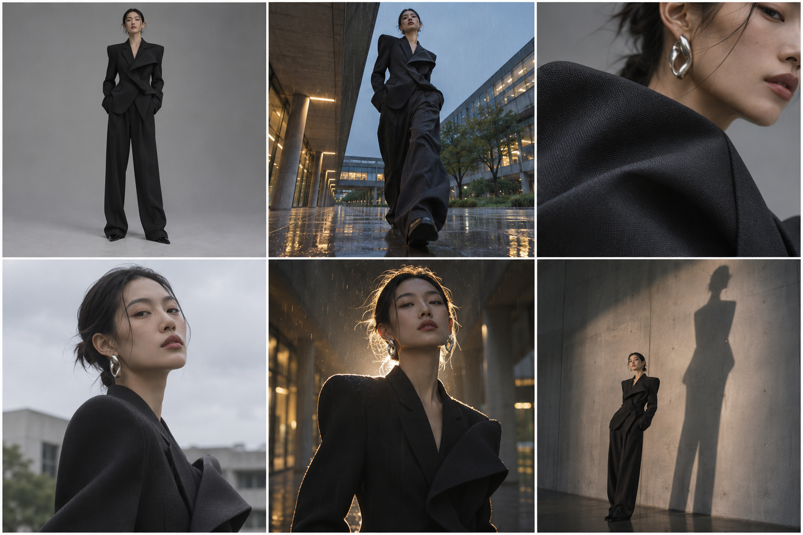

AI FASHION PHOTOGRAPHY / CLASSROOM FIELD GUIDE
生图
提示词.
把已有的摄影想法写成可讨论的画面，再把画面转译成周末能完成的拍摄计划。AI 草图帮助选择，不代替现场观察。

一条清楚的提示词
拍摄意图 → 主体与服装 → 场景与动作 → 构图与机位 → 光线与色彩 → 材质细节 → 画幅与用途 → 必须保持 / 避免的事
从想法到镜头
01 / 定事实
写清人物、服装、地点、时间和天气。上传服装参考时，注明版型、颜色和面料必须保持。
02 / 定拍法
选择景别、机位、焦段感、动作和主光方向。一次只改变一个变量，才能看懂差异。
03 / 定异常
超现实画面先设定一处异常，例如影子异常高大。其余光线、接触阴影与透视保持可信。
课堂对照
| 问题 | 模糊说法 | 可执行说法 | 实拍检查 |
|---|---|---|---|
| 服装 | 高级大片 | 黑色廓形西装；肩线、衣长、面料纹理与参考图一致 | 衣服正反面与细节照 |
| 场景 | 校园氛围 | 雨后傍晚的教学楼外廊，湿地反光，走廊透视线 | 场地、天气、备选点 |
| 镜头 | 酷一点 | 低机位略仰拍，人物一步迈向镜头，脸部清晰 | 焦段、机位高度、连拍 |
| 光线 | 电影感 | 阴天柔光作主光，右后方补一盏轮廓光 | 光线方向、补光设备 |
| 组图 | 多出几张 | 同一造型输出环境全景、半身动态、面料特写 | 镜头清单和交付比例 |
课堂演示
原方案：「红色连衣裙，在校园拍，有超现实感。」
分镜版：傍晚空教室，红色连衣裙模特站在靠窗的第二排桌边；中景、平视，窗外冷光与桌上一盏暖灯形成双色光；右侧留白。唯一不合常理之处是桌面上出现与人物动作不一致的影子。保持裙子版型和人物身份一致。
实拍版：空镜、人物原始照、裙装细节、影子素材各一组，记录机位、光线和灯位。案例参考
| 案例 | AI 用在何处 | 观察问题 | 资料 |
|---|---|---|---|
| Revolve × Maison Meta | 广告视觉 | 图像中的服装怎样对应实物？ | Vogue Business ↗ |
| Valentino Essentials | 生成式广告 | 品牌如何保持视觉一致？ | Vogue Business ↗ |
| Moncler Genius | 活动视觉 | 夸张尺度如何服务产品？ | Vogue Business ↗ |
| Prada Beauty 香氛 | 摄影加生成处理 | 原始照片和生成部分如何衔接？ | Vogue 图集 ↗ |
| AI Fashion Week × Revolve | 概念服装到实物 | 从图像到服装需要哪些步骤？ | Vogue Business ↗ |
| Mango 青年线 | 生成式广告 | 虚拟人物如何影响服装可信度？ | Vogue Business ↗ |
继续学习
B站：低角度广角 · 抖音：真实场景逻辑 · 抖音：人像布光 · The Met：摄影与超现实主义
案例链接指向原报道。页面示意图是原创 AI 生成图，不是品牌广告截图。